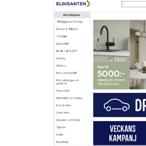
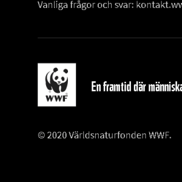
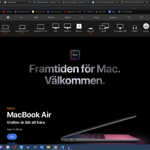

| Law | Your explanation | URL to example | Example description | Example image |
|---|---|---|---|---|
| Law of proximity | Hur vi människor uppfattar att vissa saker hör ihop genom att de är placerade nära varandra på en hemsida. | www.applet.com/se/mac | Apple har till exempel köp knappen till respektive produkt i närheten av bilden och titeln på produkten, därför vet vi att det är just den produkten som vi trycker på "köp" för och inte någon annan produkt. | |
| Law of similarity | Betyder att vi förstår att dessa objekt är lika på grund av deras likhet och tillhörande till varandra utseende och positionsmässigt. | www.elgiganten.se | Elgiganten använder sig utav en kategori lista för sina olika typer utav produkter, man förstår då enkelt att dessa är alla en kategori där de alla står i samma lista och med samma typsnitt. |  |
| Law of continuity | Används för att dirigera synen mot nya objekt, till exempel om en person som sticker ut i ett foto och hen pekar mot något så kommer vi automatiskt vilja kolla ditåt för att se vad hen pekar på. | www.disneyplus.com | Disneyplus använder sig utav plustecknet med ett sträck som antyder att det är just Disney+. | |
| Law of closure | Hjärnan kan fylla i bilder eller gap mellan former och färger, därför kan man uppfatta att en text är inom en rektangeln även fast bara hörnen är utmålade. | www.wwf.se/pandafadder | WWF's logga med pandan är ett bra exempel där hjärnan helt enkelt "målar upp" pandan i huvudet även fast det saknas vissa kantlinjer. |  |
| Law of common fate | När flera objekt rör sig tillsammans så uppfattas de som en grupp som hör ihop. | www.giphy.com | Detta exempel var på giphy, tyvärr var det ingen fysisk rörelse men färg-baren under nav-knapparna ändrade sig under allihopa, vilket följer samma princip, istället för en fysisk rörelse var det en färgrörelse det handlade om. Grupp-rörelser verkar ganska ovanligt efter ett tags sökande. | |
| Law of common region | Flera objekt inom samma inkapsling uppfattas som tillhörande varandra, eller på en bakgrund med en annan färg. | www.apple.com/se/mac | Apple använder sig utav en mörkare grå rektangel med objekt för deras olika mac produkter, därför förstår man att de är en grupp av produkter i katergorin Mac. |  |
| Law of connectedness | Beskriver att element som är visuellt kopplade med varandra uppfattas ha en starkare koppling än element utan en sammankoppling | www.fifa.com | Fifa använder sig utav samma storlek på deras boxar och de ligger på en rad för att förstärka deras samhörighet med de partners de listar. Längre ned använder de sig utav samma teknik för deras sociala medier. |